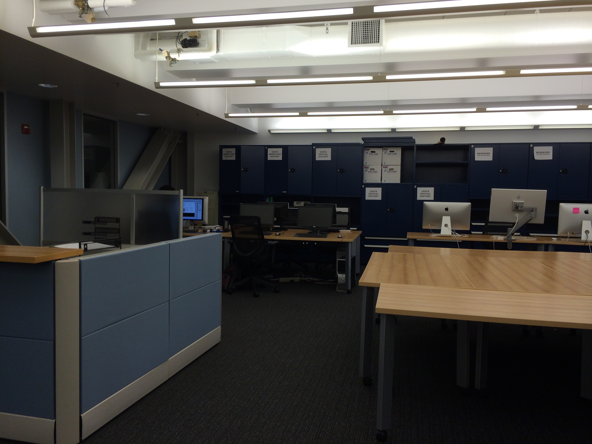
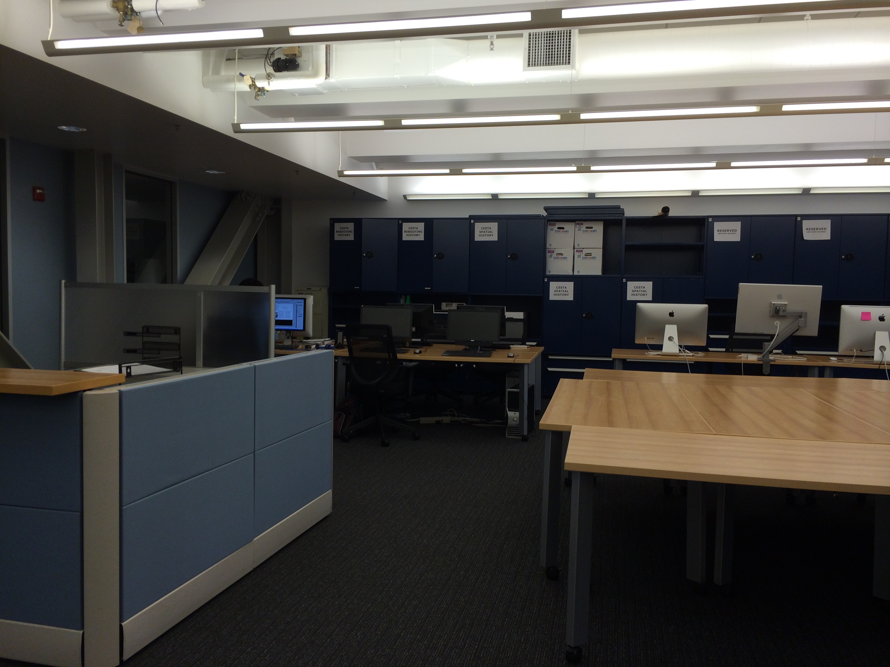
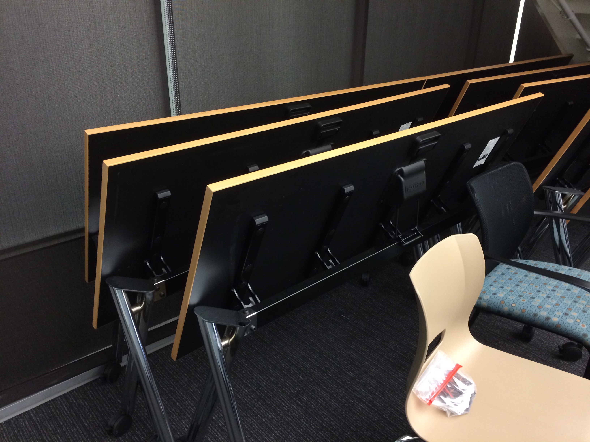
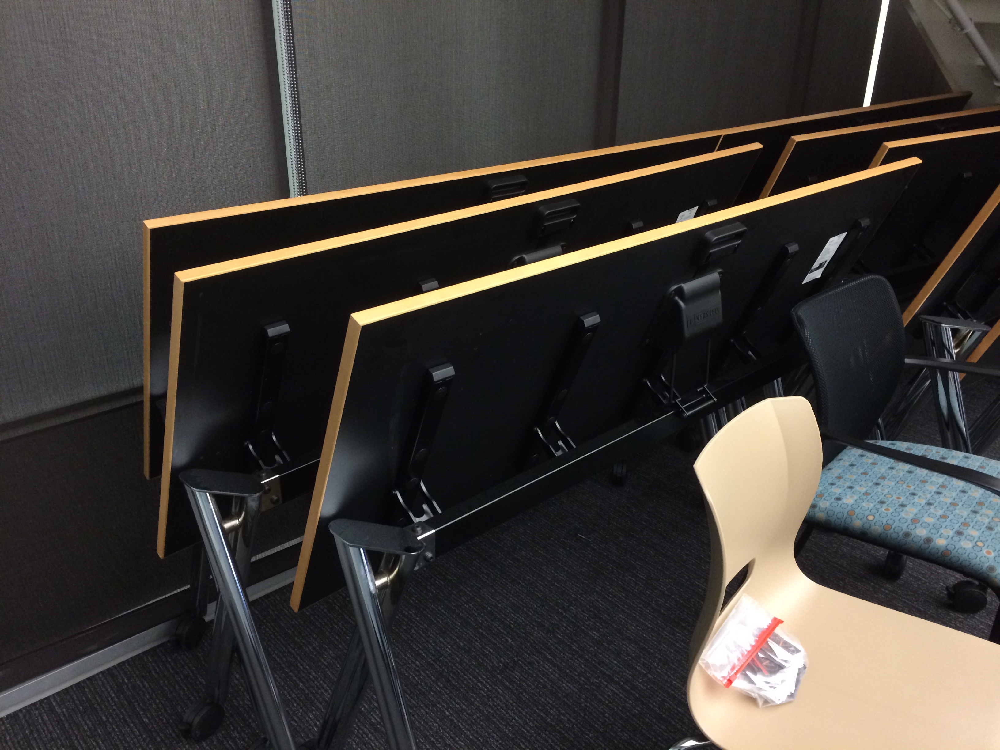

Lab Design
Sketches and Diagrams

Scholars Lab photos - before construction

{kind=link}
{kind=link}
Digital Technology
Cinemassive display, "CURVE Interact Wall" design and planning at Georgia State University Library
CURVE Interact Wall - pics on Pinterest
Wall display at Brown DSL (not by Cinemassive) - tech specs
Teaching & Visualization lab at the Hunt Library
http://www.lib.ncsu.edu/spaces/teaching-and-visualization-lab
Equipment and Furniture
Steelcase LearnLab
http://www.steelcase.com/en/products/category/educational/learnlab/pages/learnlab.aspx
Steelcase media:scape (UCLA YRL "pods" setup) - (UCLA YRL "flythrough")
http://www.steelcase.com/en/products/category/integrated/collaborative/media-scape/pages/overview.aspx
video - Steelcase and Grand Valley State University: The Mary Idema Pew Library
Learning Space Toolkit
http://learningspacetoolkit.org/
Learning Spaces Collaboratory (webinar Sept 16, 2014
http://pkallsc.org/events/lsc-webinar-transforming-sandboxing-repurposing-learning-spaces-nurturing-creative-learning
Stanford CESTA lab images (Center for Textual and Spatial Analysis)

 

{kind=link}
 

{kind=link}


{kind=link}
{kind=link}